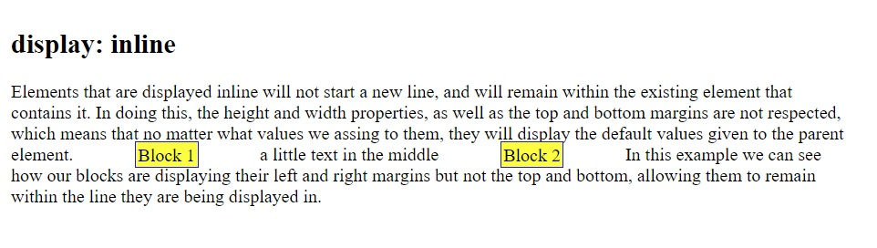
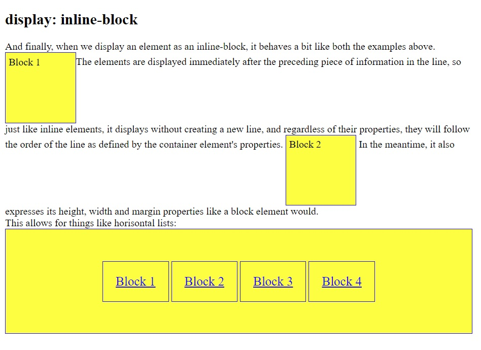

display: inline vs display: inline-block
It seems that all the elements we work with in HTML are actually blocks, from our bigger elements, like head, body, footers, to the smaller ones like links and simple words in a paragraph. All of these elements have properties like margin, size, padding, height and width, and we manipulate these properties to make them work and look exactly like we want them to. But in order to successfully do so, we need to also take into account the way they are displayed.
The ‘display’ property controls how, where and whether or not an element is displayed on the screen. There are three modalities that are relevant to understand the different ways elements are displayed, these are: block, inline and inline-block.
We’ll start by taking a look at the block type of display. These are some examples of elements that are displayed as blocks by default:
- div
- h1 - h6
- p
- form
- header
- footer
- section

The next type we’ll discuss is the inline. Some elements that are displayed inline by default are:
- span
- a
- img

The last elements to discuss are the ones we display as inline-blocks. These behave in a way that combines things from both of the display types covered above.

This is only a short overview of the properties and behaviours of these ways of displaying elements within an .html file using CSS properties. The way we decide to use and combine them will be for us to choose and get creative with.